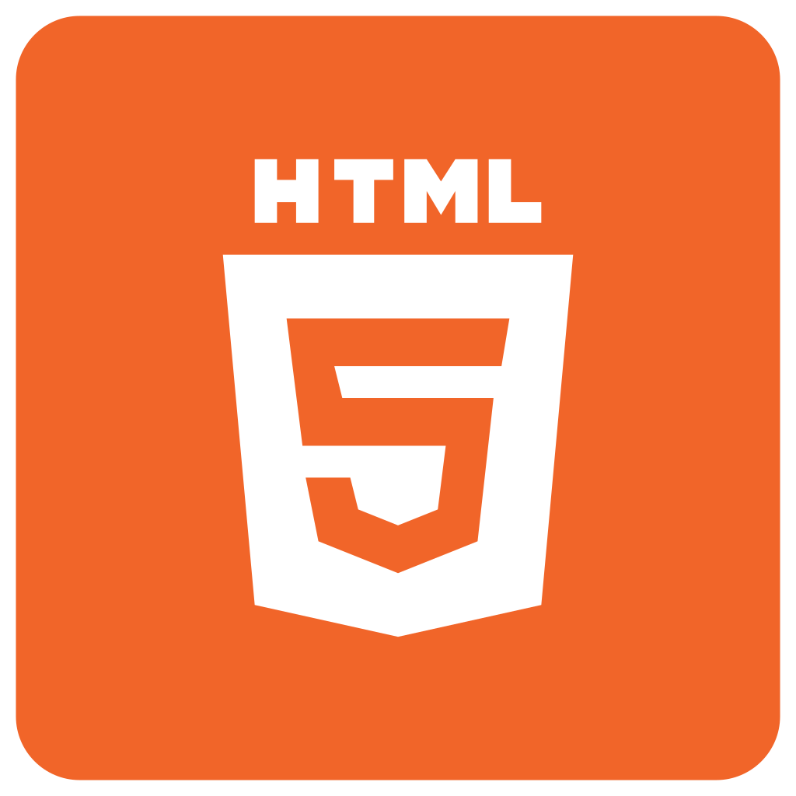
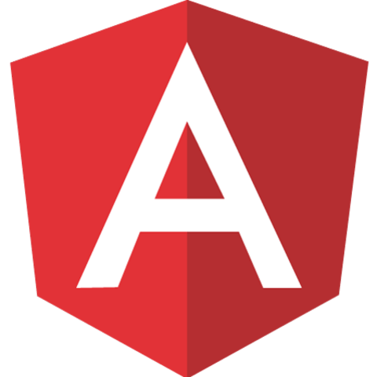
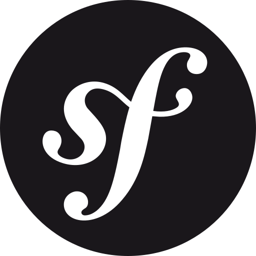
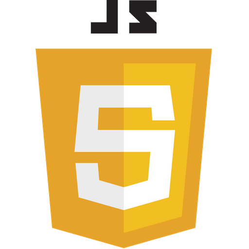
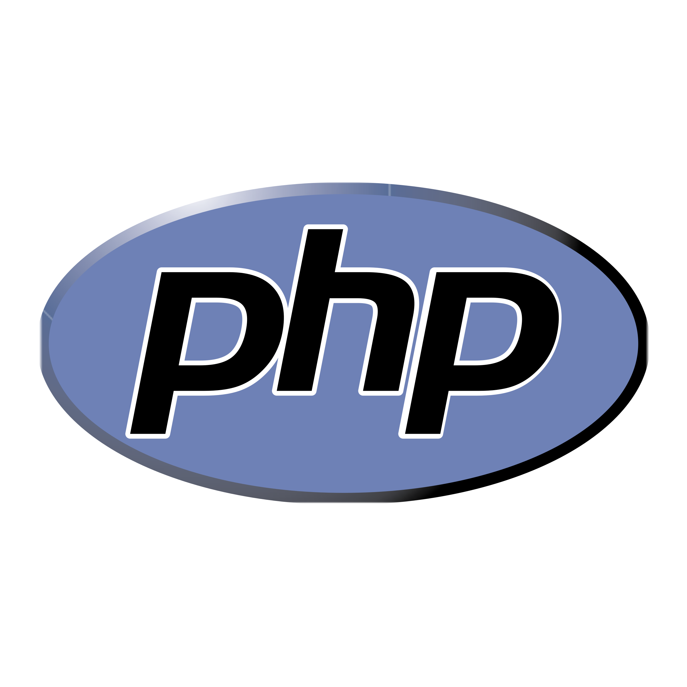
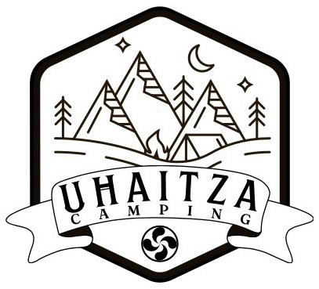

Portfolio
Esteban ELIAS PUEYO
Développeur web spécialisé en expériences digitales modernes, applications et interfaces réactives.
Télécharger mon CVÀ propos de moi
Bonjour, je m'appelle Esteban Elias Pueyo, j'ai 21 ans et je suis développeur web passionné par la création d'applications et de sites web modernes. J'ai suivi une formation en informatique jusqu'en 2024, durant laquelle j'ai acquis de solides compétences en développement web avec PHP, HTML/CSS, JavaScript, Symfony et Angular. J'ai également travaillé avec des technologies de développement logiciel telles que Java, Android Studio et C++.
Ma passion pour la programmation est née grâce aux jeux vidéo, qui m'ont donné envie de comprendre comment les logiciels sont conçus et fonctionnent. Depuis, je développe régulièrement des projets personnels et professionnels afin d'améliorer mes compétences techniques et de découvrir de nouvelles technologies. À travers ce portfolio, je vous invite à découvrir mon parcours, mes réalisations et les compétences que j'ai développées au fil de mon expérience.
Mon parcours
Developpeur Web pour Winux
Diplôme BUT Informatique, Conception et Développement d'applications
Stage Développeur LIG
Stage Développeur Winux
Mes Compétences
Langages

HTML/CSS
Angular
Symfony
JavaScript
PHPLogiciels
Mes Projets Académiques

Space Charity
- PHP
- NodeJS
- JavaScript
- MySQL
Space Charity est un projet académique réalisé en PHP dans le cadre d'un exercice de développement web. L'objectif était de concevoir une plateforme de vente aux enchères B2C autour d'un concept fictif : l'acquisition symbolique de planètes virtuelles lors d'événements caritatifs.
Les enchères sont organisées par vagues limitées dans le temps, durant lesquelles les utilisateurs peuvent enchérir sur différents astres. Une fois l'événement terminé, les propriétaires virtuels conservent leur planète et peuvent la personnaliser en lui attribuant un surnom.
Ce projet m'a permis de mettre en pratique le développement web dynamique, la gestion des utilisateurs, la conception de bases de données et l'implémentation d'un système d'enchères.

Projet API de recherches d'articles de News
- HTML/CSS
- JavaScript
- API utilisée NewsData.io
Projet API de recherche d'articles de presse est un projet académique réalisé en binôme dans le cadre d'un exercice d'intégration d'API. L'objectif était de développer une application web exploitant l'API NewsData.io afin de rechercher et consulter des articles d'actualité à partir de mots-clés.
L'application permet notamment de filtrer les résultats par langue, d'ajouter ou retirer des mots-clés et d'enregistrer des recherches personnalisées en favoris.
Ce projet m'a permis de renforcer mes compétences en développement web, en consommation d'API REST et en travail collaboratif.

Robot Gravity
- Python
Robot Gravity est un projet académique réalisé lors d'une Game Jam de 4 jours en équipe de quatre personnes. Le défi consistait à concevoir et développer un jeu vidéo original à partir des thèmes imposés : Robot et Gravité.
Développé en Python avec la bibliothèque Pygame, le projet nous a amenés à travailler dans un délai très court tout en respectant des exigences de qualité de code et de conception. Cette expérience m'a permis de renforcer mes compétences en développement de jeux vidéo, en résolution de problèmes et en collaboration au sein d'une équipe.

GADI
- Angular
- Symfony
- PostgreSQL
GADI est un projet académique réalisé dans le cadre du BUT Informatique. L'objectif était de moderniser entièrement GADI, une application interne utilisée par les enseignants pour la gestion pédagogique et administrative de la formation. Après plus de dix ans d'utilisation, l'application historique ne répondait plus aux besoins actuels, notamment en raison de l'évolution des programmes et de l'arrivée de la réforme des BUT.
Le projet a été développé avec une architecture moderne reposant sur Angular pour le front-end et Symfony pour le back-end, ce dernier exposant une API REST connectée à une base de données PostgreSQL. J'ai principalement contribué au développement de la partie back-end, en participant à la conception des modèles de données, à l'implémentation des règles métier et au développement des différents endpoints de l'API.
L'application permet notamment la gestion des budgets des enseignants, la planification des ressources pédagogiques ainsi que l'organisation des Situations d'Apprentissage et d'Évaluation (SAE). Ce projet m'a permis d'approfondir mes compétences en développement d'API avec Symfony, en conception de bases de données relationnelles et en développement d'applications web à grande échelle au sein d'une équipe.
Mes Projets Professionnels

AugCom
- Angular CLI
- Node JS
AugCom est une application innovante conçue pour faciliter la communication des personnes en situation de handicap cognitif. En utilisant des grilles de communication qui combinent pictogrammes et mots, l'application permet à ces individus de s'exprimer plus facilement. Les utilisateurs peuvent sélectionner les mots et pictogrammes sur la grille, et AugCom les prononce à haute voix, permettant ainsi aux personnes autour d'eux de comprendre le message transmis.
Ce type d'outil est particulièrement utile pour les personnes ayant des troubles de la parole ou des difficultés à s'exprimer verbalement. En offrant une méthode alternative et augmentative de communication (AAC), AugCom contribue à améliorer l'inclusion sociale et la qualité de vie des utilisateurs en leur donnant une voix et en facilitant leurs interactions quotidiennes.
Mon travail dans ce projet était de développer et d'améliorer des fonctionnalités. J'ai notamment refait le guide de l'application, développé un export des grilles vers Word et rajouté de nouveaux types de boutons pour les grilles.

Camping Uhaitza
- Android Studio
J'ai développé une application pour le camping Uhaitza, cette application est née d'un besoin exprimé par les campeurs ayant du mal à trouver des activités à faire proche du camping. Cette application est développée sous Android Studio.
Cette application répertorie les activités à faire à proximité du Camping Uhaitza et sont catégorisées parmi plusieurs critères comme leur prix, leur distance, l'âge minimum ou encore si l'activité est faisable par temps de pluie.